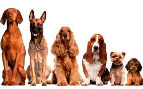

Это полезная и вкусная еда, приготовленная с учетом всех физиологических потребностей взрослых собак всех пород.
Аппетитный сухой корм с говядиной обязательно подарит удовольствие Вашей собаке и даст ее организму все необходимые элементы:
• Линолевую кислоту, цинк и витамины группы В для здоровья кожи и шерсти
• Оптимальный уровень кальция для крепких зубов
• Высокоусвояемые ингредиенты и клетчатку для оптимального пищеварения
• Витамин Е и цинк для поддержания иммунной системы